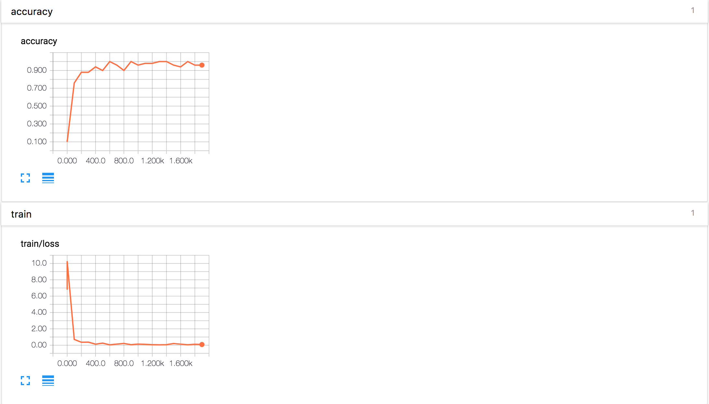
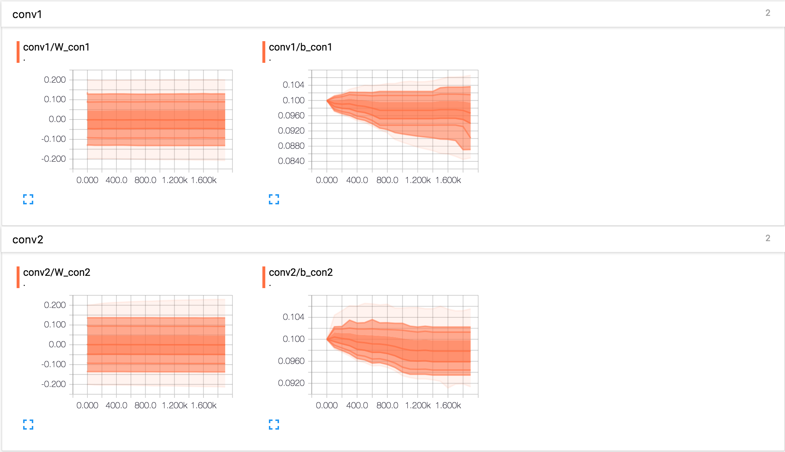
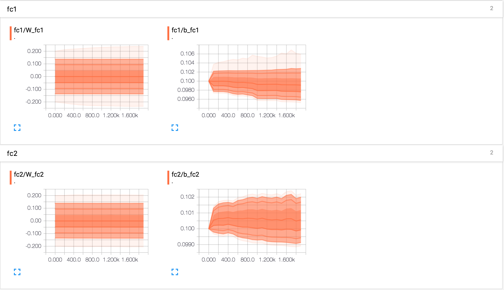
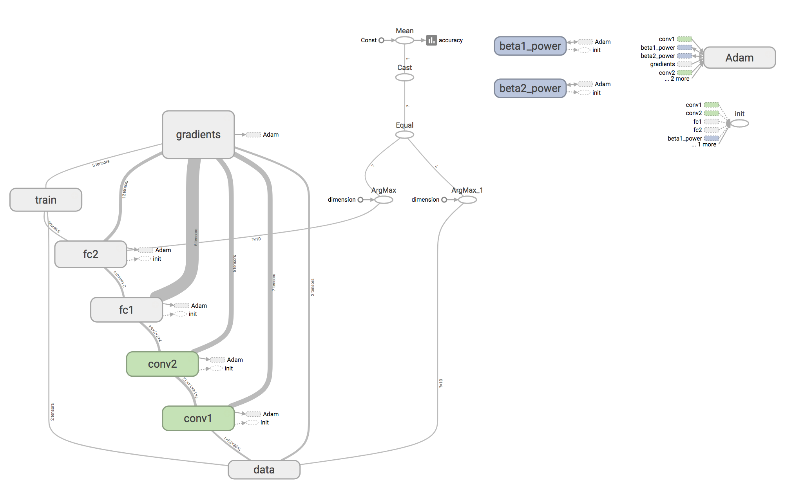

图像识别卷积网络实现案例
Mnist数据集卷积网络实现
前面在MNIST上获得92％的准确性是不好的，对于CNN网络来说，我们同样使用Mnist数据集来做案例，这可以使我们的准确率提升很多。在感受输入通道时不是那么明显，因为是黑白图像的只有一个输入通道。那么在Tensorflow中，神经网络相关的操作都在tf.nn模块中，包含了卷积、池化和损失等相关操作。
准备基础函数
初始化卷积层权重
为了创建这个模型，我们需要创建大量的权重和偏置项。这个模型中的权重在初始化时应该加入少量的噪声来打破对称性以及避免0梯度。由于我们使用的是ReLU神经元，因此比较好的做法是用一个较小的正数来初始化偏置项，以避免神经元节点输出恒为0的问题（dead neurons）。为了不在建立模型的时候反复做初始化操作，我们定义两个函数用于初始化。
def weight_variable(shape):
initial = tf.truncated_normal(shape, stddev=0.1)
return tf.Variable(initial)
def bias_variable(shape):
initial = tf.constant(0.1, shape=shape)
return tf.Variable(initial)
卷积和池化
首先介绍一下Tensorflow当中的卷积和池化操作。
tf.nn.conv2d(input, filter, strides, padding, use_cudnn_on_gpu=None, name=None)
ARGS：
- input：A Tensor。必须是以下类型之一：float32，float64。
- filter：A Tensor。必须有相同的类型input。
- strides：列表ints。1-D长度4.每个尺寸的滑动窗口的步幅input。
- paddingA string来自："SAME", "VALID"。使用的填充算法的类型。
- use_cudnn_on_gpu：可选bool。默认为True。
- name：操作的名称（可选）。
tf.nn.max_pool(value, ksize, strides, padding, name=None)
ARGS：
- value：A 4-D Tensor具有形状[batch, height, width, channels]和类型float32，float64，qint8，quint8，qint32。
- ksize：长度> = 4的int列表。输入张量的每个维度的窗口大小。
- strides：长度> = 4的int列表。输入张量的每个维度的滑动窗口的跨度。
- padding：一个字符串，或者'VALID'或'SAME'。填补算法。
- name：操作的可选名称。
TensorFlow在卷积和池化上有很强的灵活性。我们使用步长为2，1个零填充边距的模版。池化选择2*2大小。
def conv2d(x, W):
return tf.nn.conv2d(x, W, strides=[1, 1, 1, 1], padding='SAME')
def max_pool_2x2(x):
return tf.nn.max_pool(x, ksize=[1, 2, 2, 1],
strides=[1, 2, 2, 1], padding='SAME')
CNN实现
本次案例我们使用两层卷积池化，两个全连接层以及添加一个解决过拟合方法
输入数据占位符准备
我们在训练的过程中需要一直提供数据,所以我们准备一些占位符，以备训练的时候填充。并且我们把x变成一个4d向量，其第2、第3维对应图片的宽、高，最后一维代表图片的颜色通道数(因为是灰度图所以这里的通道数为1，如果是rgb彩色图，则为3)。
with tf.variable_scope("data") as scope:
y_label = tf.placeholder(tf.float32, [None, 10])
x = tf.placeholder(tf.float32, [None, 784])
x_image = tf.reshape(x, [-1, 28, 28, 1])
第一层卷积加池化
卷积的权重张量形状是[5, 5, 1, 32]，前两个维度是patch的大小，接着是输入的通道数目，最后是输出的通道数目。 而对于每一个输出通道都有一个对应的偏置量。 我们把x_image和权值向量进行卷积，加上偏置项，然后应用ReLU激活函数，最后进行max pooling。同样为了便于观察将高位变量W_con1、b_con1添加到事件文件中。
with tf.variable_scope("conv1") as scope:
W_conv1 = weight_variable([5, 5, 1, 32])
b_conv1 = bias_variable([32])
h_conv1 = tf.nn.relu(conv2d(x_image, W_conv1) + b_conv1)
h_pool1 = max_pool_2x2(h_conv1)
tf.summary.histogram('W_con1', W_conv1)
tf.summary.histogram('b_con1', b_conv1)
第二层卷积加池化
为了构建一个更深的网络，我们会把几个类似的层堆叠起来。第二层中，接受上一层的输出32各通道，我们同样用5x5的的过滤器大小，指定输出64个通道。将高位变量W_con2、b_con2添加到事件文件中。
with tf.variable_scope("conv2") as scope:
W_conv2 = weight_variable([5, 5, 32, 64])
b_conv2 = bias_variable([64])
h_conv2 = tf.nn.relu(conv2d(h_pool1, W_conv2) + b_conv2)
h_pool2 = max_pool_2x2(h_conv2)
tf.summary.histogram('W_con2', W_conv2)
tf.summary.histogram('b_con2', b_conv2)
两个全连接层
进行了两次卷积池化之后，数据量得到有效减少，并且也相当于进行了一些特征选择。那么现在就需要将所有数据进行权重乘积求和，来进行特征加权，这样就得到了输出结果，同时也可以提供给交叉熵进行优化器优化。将高位变量W_fc1、b_fc1、W_fc2、b_fc2添加到事件文件中。
with tf.variable_scope("fc1") as scope:
W_fc1 = weight_variable([7 * 7 * 64, 1024])
b_fc1 = bias_variable([1024])
h_pool2_flat = tf.reshape(h_pool2, [-1, 7 * 7 * 64])
h_fc1 = tf.nn.relu(tf.matmul(h_pool2_flat, W_fc1) + b_fc1)
tf.summary.histogram('W_fc1', W_fc1)
tf.summary.histogram('b_fc1', b_fc1)
with tf.variable_scope("fc2") as scope:
keep_prob = tf.placeholder(tf.float32)
h_fc1_drop = tf.nn.dropout(h_fc1, keep_prob)
W_fc2 = weight_variable([1024, 10])
b_fc2 = bias_variable([10])
y_conv = tf.matmul(h_fc1_drop, W_fc2) + b_fc2
tf.summary.histogram('W_fc2', W_fc2)
tf.summary.histogram('b_fc2', b_fc2)
计算损失
通过交叉熵进行计算,将损失添加到事件文件当中
def total_loss(y_conv,y_label):
"""
计算损失
:param y_conv: 模型输出
:param y_label: 数据标签
:return: 返回损失
"""
with tf.variable_scope("train") as scope:
cross_entropy = tf.reduce_mean(tf.nn.softmax_cross_entropy_with_logits(labels=y_label, logits=y_conv))
tf.summary.scalar("loss", cross_entropy)
return cross_entropy
训练
mnist数据是一个稀疏的数据矩阵，所以我们的优化器选择AdamOptimizer,同时指定学习率。通过tf.equal和tf.argmax来求准确率
def train(loss,sess,placeholder):
"""
训练模型
:param loss: 损失
:param sess: 会话
:param placeholder: 占位符，用于填充数据
:return: None
"""
# 生成梯度下降优化器
train_step = tf.train.AdamOptimizer(1e-4).minimize(loss)
# 计算准确率
correct_prediction = tf.equal(tf.argmax(y_conv, 1), tf.argmax(y_label, 1))
accuracy = tf.reduce_mean(tf.cast(correct_prediction, tf.float32))
tf.summary.scalar("accuracy", accuracy)
# 初始化变量
tf.global_variables_initializer().run()
# 合并所有摘要
merged = tf.summary.merge_all()
summary_writer = tf.summary.FileWriter(FLAGS.summary_dir, graph=sess.graph)
# 循环训练
for i in range(FLAGS.max_steps):
batch_xs,batch_ys = mnist.train.next_batch(50)
# 每过100次进行一次输出
if i % 100 == 0:
train_accuracy = accuracy.eval(feed_dict={placeholder[0]: batch_xs, placeholder[1]: batch_ys, placeholder[2]: 1.0})
print("第%d轮，准确率：%f" % (i, train_accuracy))
summary = sess.run(merged, feed_dict={placeholder[0]: batch_xs, placeholder[1]: batch_ys, placeholder[2]: 1.0})
summary_writer.add_summary(summary,i)
train_step.run(feed_dict={placeholder[0]: batch_xs, placeholder[1]: batch_ys, placeholder[2]: 1.0})
print("测试数据准确率：%g" % accuracy.eval(feed_dict={placeholder[0]: mnist.test.images, placeholder[1]: mnist.test.labels, placeholder[2]: 1.0}))
输出结果以及显示
通过几分钟的训练等待，我们可以启用tensorboard来查看训练过程以及结果，pycharm中的结果为：

损失和准确率：

卷积参数：

全连接参数：

计算图：

完整代码如下
from __future__ import absolute_import
from tensorflow.examples.tutorials.mnist import input_data
import tensorflow as tf
FLAGS = tf.app.flags.FLAGS
tf.app.flags.DEFINE_string('data_dir', '/tmp/tensorflow/mnist/input_data',
"""数据集目录""")
tf.app.flags.DEFINE_integer('max_steps', 2000,
"""训练次数""")
tf.app.flags.DEFINE_string('summary_dir', '/tmp/summary/mnist/convtrain',
"""事件文件目录""")
mnist = input_data.read_data_sets(FLAGS.data_dir, one_hot=True)
def weight_variable(shape):
initial = tf.truncated_normal(shape, stddev=0.1)
return tf.Variable(initial)
def bias_variable(shape):
initial = tf.constant(0.1, shape=shape)
return tf.Variable(initial)
def conv2d(x, W):
return tf.nn.conv2d(x, W, strides=[1, 1, 1, 1], padding='SAME')
def max_pool_2x2(x):
return tf.nn.max_pool(x, ksize=[1, 2, 2, 1],strides=[1, 2, 2, 1], padding='SAME')
def reference():
"""
得到模型输出
:return: 模型输出与数据标签
"""
with tf.variable_scope("data") as scope:
y_label = tf.placeholder(tf.float32, [None, 10])
x = tf.placeholder(tf.float32, [None, 784])
x_image = tf.reshape(x, [-1, 28, 28, 1])
with tf.variable_scope("conv1") as scope:
W_conv1 = weight_variable([5, 5, 1, 32])
b_conv1 = bias_variable([32])
h_conv1 = tf.nn.relu(conv2d(x_image, W_conv1) + b_conv1)
h_pool1 = max_pool_2x2(h_conv1)
tf.summary.histogram('W_con1', W_conv1)
tf.summary.histogram('b_con1', b_conv1)
with tf.variable_scope("conv2") as scope:
W_conv2 = weight_variable([5, 5, 32, 64])
b_conv2 = bias_variable([64])
h_conv2 = tf.nn.relu(conv2d(h_pool1, W_conv2) + b_conv2)
h_pool2 = max_pool_2x2(h_conv2)
tf.summary.histogram('W_con2', W_conv2)
tf.summary.histogram('b_con2', b_conv2)
with tf.variable_scope("fc1") as scope:
W_fc1 = weight_variable([7 * 7 * 64, 1024])
b_fc1 = bias_variable([1024])
h_pool2_flat = tf.reshape(h_pool2, [-1, 7 * 7 * 64])
h_fc1 = tf.nn.relu(tf.matmul(h_pool2_flat, W_fc1) + b_fc1)
tf.summary.histogram('W_fc1', W_fc1)
tf.summary.histogram('b_fc1', b_fc1)
with tf.variable_scope("fc2") as scope:
keep_prob = tf.placeholder(tf.float32)
h_fc1_drop = tf.nn.dropout(h_fc1, keep_prob)
W_fc2 = weight_variable([1024, 10])
b_fc2 = bias_variable([10])
tf.summary.histogram('W_fc2', W_fc2)
tf.summary.histogram('b_fc2', b_fc2)
y_conv = tf.matmul(h_fc1_drop, W_fc2) + b_fc2
return y_conv,y_label,(x,y_label,keep_prob)
def total_loss(y_conv,y_label):
"""
计算损失
:param y_conv: 模型输出
:param y_label: 数据标签
:return: 返回损失
"""
with tf.variable_scope("train") as scope:
cross_entropy = tf.reduce_mean(tf.nn.softmax_cross_entropy_with_logits(labels=y_label, logits=y_conv))
tf.summary.scalar("loss", cross_entropy)
return cross_entropy
def train(loss,sess,placeholder):
"""
训练模型
:param loss: 损失
:param sess: 会话
:param placeholder: 占位符，用于填充数据
:return: None
"""
# 生成梯度下降优化器
train_step = tf.train.AdamOptimizer(1e-4).minimize(loss)
# 计算准确率
correct_prediction = tf.equal(tf.argmax(y_conv, 1), tf.argmax(y_label, 1))
accuracy = tf.reduce_mean(tf.cast(correct_prediction, tf.float32))
tf.summary.scalar("accuracy", accuracy)
# 初始化变量
tf.global_variables_initializer().run()
# 合并所有摘要
merged = tf.summary.merge_all()
summary_writer = tf.summary.FileWriter(FLAGS.summary_dir, graph=sess.graph)
# 循环训练
for i in range(FLAGS.max_steps):
batch_xs,batch_ys = mnist.train.next_batch(50)
# 每过100次进行一次输出
if i % 100 == 0:
train_accuracy = accuracy.eval(feed_dict={placeholder[0]: batch_xs, placeholder[1]: batch_ys, placeholder[2]: 1.0})
print("第%d轮，准确率：%f" % (i, train_accuracy))
summary = sess.run(merged, feed_dict={placeholder[0]: batch_xs, placeholder[1]: batch_ys, placeholder[2]: 1.0})
summary_writer.add_summary(summary,i)
train_step.run(feed_dict={placeholder[0]: batch_xs, placeholder[1]: batch_ys, placeholder[2]: 1.0})
print("测试数据准确率：%g" % accuracy.eval(feed_dict={placeholder[0]: mnist.test.images, placeholder[1]: mnist.test.labels, placeholder[2]: 1.0}))
if __name__ == '__main__':
with tf.Session() as sess:
y_conv,y_label,placeholder = reference()
loss = total_loss(y_conv,y_label)
train(loss,sess,placeholder)